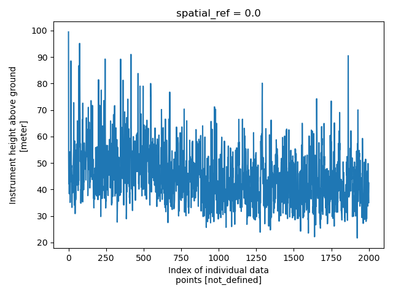
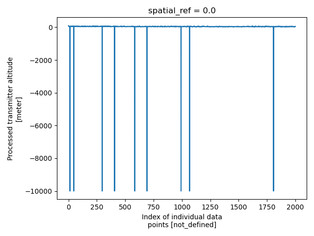

Note
Go to the end to download the full example code.
CSV & Rasters: Multi-dataset Survey with Derivative Products
This example demonstrates the typical workflow for creating a GS file for an AEM survey in its entirety, i.e., the NetCDF file contains all related datasets together, e.g., raw data, processed data, inverted models, and derivative products. Specifically, this survey contains:
Minimally processed (raw) AEM data and raw/processed magnetic data provided by SkyTEM
Fully processed AEM data used as input to inversion
Laterally constrained inverted resistivity models
Point-data estimates of bedrock depth derived from the AEM models
Interpolated magnetic and bedrock depth grids
Note: To make the size of this example more managable, some of the input datasets have been downsampled relative to the source files in the data release referenced below.
Dataset Reference: Minsley, B.J, Bloss, B.R., Hart, D.J., Fitzpatrick, W., Muldoon, M.A., Stewart, E.K., Hunt, R.J., James, S.R., Foks, N.L., and Komiskey, M.J., 2022, Airborne electromagnetic and magnetic survey data, northeast Wisconsin (ver. 1.1, June 2022): U.S. Geological Survey data release, https://doi.org/10.5066/P93SY9LI.
import matplotlib.pyplot as plt
from os.path import join
import numpy as np
import gspy
from gspy import Survey
import xarray as xr
from pprint import pprint
import warnings
warnings.filterwarnings('ignore')
Initialize the Survey
# Path to example files
data_path = '..//data_files//skytem_csv'
# Survey metadata file
metadata = join(data_path, "data//skytem_survey.yml")
# Establish the Survey
survey = Survey.from_dict(metadata)
Create a Data Branch
data_container = survey.gs.add_container('data', **dict(content = "raw and processed data",
comment = "<extra info goes here>"))
Attach leaves to the data branch
Raw Data
# Import raw AEM data from CSV-format.
# Define input data file and associated metadata file
d_data1 = join(data_path, 'data//skytem_contractor_data.csv')
d_supp1 = join(data_path, 'data//skytem_contractor_data.yml')
# Add the raw AEM data as a tabular dataset,
# pass the EM system from the survey
rd = data_container.gs.add(key='raw_data', data_filename=d_data1,
metadata_file=d_supp1, system=survey.nominal_system)
Processed Data
# Import processed AEM data from CSV-format.
# Define input data file and associated metadata file
d_data2 = join(data_path, 'data//skytem_processed_data.csv')
d_supp2 = join(data_path, 'data//skytem_processed_data.yml')
Example of how systems can be selected and modified to accurately match the processed data
system = {"skytem_system" : survey["nominal_system"].isel(lm_gate_times=np.s_[1:],
hm_gate_times=np.s_[10:]),
"magnetic_system" : survey["magnetic_system"]}
Add the processed AEM data as a tabular dataset, passing the updated systems
pd = data_container.gs.add(key='processed_data', data_filename=d_data2,
metadata_file=d_supp2, system=system)
Create a Models Branch
# Create a new container for models
model_container = survey.gs.add_container('models', **dict(content = "Inverted models",
comment = "This is a test"))
Inverted Models
# Import inverted AEM models from CSV-format.
# Define input data file and associated metadata file
m_data3 = join(data_path, 'model//skytem_inverted_models.csv')
m_supp3 = join(data_path, 'model//skytem_inverted_models.yml')
# Add the inverted AEM models as a tabular dataset
mods = model_container.gs.add(key='inverted_models', data_filename=m_data3,
metadata_file=m_supp3)
Derivative Products
Bedrock Picks
Adding bedrock picks to the ‘data’ branch
# Import AEM-based estimated of depth to bedrock from CSV-format.
# Define input data file and associated metadata file
d_data4 = join(data_path, 'data//top_dolomite_blocky_lidar.csv')
d_supp4 = join(data_path, 'data//bedrock_picks.yml')
# Add the AEM-based estimated of depth to bedrock as a tabular dataset
bedrock = data_container.gs.add(key='depth_to_bedrock', data_filename=d_data4,
metadata_file=d_supp4)
Raster Maps
Create a 3rd container for the derived raaster maps
derived_maps = survey.gs.add_container('derived_maps', **dict(content = "raster products derived from airborne data and models"))
# Import interpolated bedrock and magnetic maps from TIF-format.
# Define input metadata file (which contains the TIF filenames linked to variable names)
m_supp5 = join(data_path, 'data//magnetics_bedrock_picks.yml')
# Add the interpolated maps as a raster dataset
maps = derived_maps.gs.add(key='maps', metadata_file=m_supp5)
View the Data Tree
print(survey.gs.tree)
/survey
/survey/nominal_system
/survey/magnetic_system
/survey/data
/survey/models
/survey/derived_maps
/survey/data/raw_data
/survey/data/processed_data
/survey/data/depth_to_bedrock
/survey/models/inverted_models
/survey/derived_maps/maps
/survey/data/raw_data/nominal_system
/survey/data/processed_data/skytem_system
/survey/data/processed_data/magnetic_system
print(survey)
<xarray.DataTree 'survey'>
Group: /survey
│ Dimensions: ()
│ Coordinates:
│ spatial_ref float64 8B 0.0
│ Data variables:
│ survey_information float64 8B nan
│ flightline_information float64 8B nan
│ survey_equipment float64 8B nan
│ Attributes:
│ type: survey
│ title: SkyTEM Airborne Electromagnetic (AEM) Survey, Northeast Wis...
│ institution: USGS Geology, Geophysics, and Geochemistry Science Center
│ source: SkyTEM raw data, USGS processed data and inverted resistivi...
│ history: (1) Data acquisition 01/2021 - 02/2021 by SkyTEM Canada Inc...
│ references: Minsley, Burke J., B.R. Bloss, D.J. Hart, W. Fitzpatrick, M...
│ comment: This dataset includes minimally processed (raw) AEM and raw...
│ summary: Airborne electromagnetic (AEM) and magnetic survey data wer...
│ content: survey information (group /survey), raw data (group /survey...
│ created_by: gspy==2.2.8
│ conventions: CF-1.8, GS-2.0
├── Group: /survey/nominal_system
│ Dimensions: (gate_times: 22, nv: 2,
│ lm_gate_times: 28,
│ hm_gate_times: 32,
│ n_loop_vertices: 8, xyz: 3,
│ n_transmitter: 2,
│ transmitter_lm_waveform_time: 21,
│ transmitter_hm_waveform_time: 36,
│ n_receiver: 2, n_couplet: 4,
│ dim_0: 1)
│ Coordinates:
│ * gate_times (gate_times) float64 176B 5....
│ * nv (nv) int64 16B 0 1
│ * lm_gate_times (lm_gate_times) float64 224B ...
│ * hm_gate_times (hm_gate_times) float64 256B ...
│ * n_loop_vertices (n_loop_vertices) int64 64B ...
│ * xyz (xyz) int64 24B 0 1 2
│ * n_transmitter (n_transmitter) int64 16B 0 1
│ * transmitter_lm_waveform_time (transmitter_lm_waveform_time) float64 168B ...
│ * transmitter_hm_waveform_time (transmitter_hm_waveform_time) float64 288B ...
│ * n_receiver (n_receiver) int64 16B 0 1
│ * n_couplet (n_couplet) int64 32B 0 1 2 3
│ Dimensions without coordinates: dim_0
│ Data variables: (12/35)
│ gate_times_bnds (gate_times, nv) float64 352B ...
│ lm_gate_times_bnds (lm_gate_times, nv) float64 448B ...
│ hm_gate_times_bnds (hm_gate_times, nv) float64 512B ...
│ n_loop_vertices_bnds (n_loop_vertices, nv) float64 128B ...
│ xyz_bnds (xyz, nv) float64 48B -0.5 ....
│ transmitter_label (n_transmitter) <U2 16B 'LM'...
│ ... ...
│ couplet_data_type (n_couplet) <U4 64B 'dBdt' ....
│ couplet_gate_times (n_couplet) <U13 208B 'lm_ga...
│ data_normalized (dim_0) bool 1B True
│ skytem_skb_gex_available (dim_0) bool 1B True
│ reference_frame <U26 104B 'right-handed posi...
│ coil_orientations <U4 16B 'X, Z'
│ Attributes:
│ type: system
│ mode: airborne
│ method: electromagnetic, time domain
│ instrument: SkyTEM 304M
│ name: nominal_system
├── Group: /survey/magnetic_system
│ Dimensions: (base_mag_locations: 2, n_transmitter: 1,
│ n_receiver: 1, n_couplet: 1,
│ n_base_magnetometer: 1)
│ Coordinates:
│ * base_mag_locations (base_mag_locations) int64 16B 1 2
│ * n_transmitter (n_transmitter) int64 8B 0
│ * n_receiver (n_receiver) int64 8B 0
│ * n_couplet (n_couplet) int64 8B 0
│ * n_base_magnetometer (n_base_magnetometer) int64 8B 0
│ Data variables: (12/29)
│ transmitter_label (n_transmitter) <U7 28B 'passive'
│ transmitter_description (n_transmitter) <U142 568B "No artifici...
│ receiver_label (n_receiver) <U19 76B 'scalar_magnetome...
│ receiver_sensor_type (n_receiver) <U23 92B 'cesium-vapor spl...
│ receiver_sensor_model (n_receiver) <U6 24B 'G-822A'
│ receiver_sensor_manufacturer (n_receiver) <U10 40B 'Geometrics'
│ ... ...
│ diurnal_correction <U110 440B 'Diurnal signal removed usin...
│ tieline_levelling <U33 132B 'No tie line-leveling were ap...
│ microlevelling <U31 124B 'No micro-levelling were appl...
│ igrf_model_date <U21 84B '2015, 15th generation'
│ igrf_model_location <U54 216B 'variable according to GPS WG...
│ igrf_model_height <U69 276B 'variable according to magnet...
│ Attributes:
│ type: system
│ mode: airborne
│ method: magnetic
│ instrument: Geometrics G-822A cesium‑vapor magnetometer
│ name: magnetic_system
├── Group: /survey/data
│ │ Dimensions: ()
│ │ Data variables:
│ │ spatial_ref float64 8B 0.0
│ │ Attributes:
│ │ content: raw and processed data
│ │ comment: <extra info goes here>
│ │ type: container
│ ├── Group: /survey/data/raw_data
│ │ │ Dimensions: (index: 2000, hm_gate_times: 32, lm_gate_times: 28)
│ │ │ Coordinates:
│ │ │ spatial_ref float64 8B 0.0
│ │ │ * index (index) int32 8kB 0 1 2 3 4 5 ... 1995 1996 1997 1998 1999
│ │ │ x (index) float64 16kB 7.243e+05 7.239e+05 ... 6.952e+05
│ │ │ y (index) float64 16kB 4.916e+05 4.917e+05 ... 4.522e+05
│ │ │ z (index) float64 16kB 176.8 217.3 231.6 ... 240.8 250.0
│ │ │ t (index) float64 16kB 4.422e+04 4.422e+04 ... 4.422e+04
│ │ │ * hm_gate_times (hm_gate_times) float64 256B 2.886e-05 ... 0.003544
│ │ │ * lm_gate_times (lm_gate_times) float64 224B -1.135e-06 ... 0.001394
│ │ │ Data variables: (12/30)
│ │ │ _60hz_intensity (index) float64 16kB -5.744e-08 -4.722e-08 ... 1.251e-07
│ │ │ alt (index) float64 16kB 276.3 270.1 274.2 ... 283.5 285.1
│ │ │ anglex (index) float64 16kB 3.284 1.052 2.916 ... 0.9546 3.211
│ │ │ angley (index) float64 16kB -0.9891 -1.999 ... -1.946 0.1495
│ │ │ base_mag (index) float64 16kB -1e+04 -1e+04 -1e+04 ... -1e+04 -1e+04
│ │ │ curr_hm (index) float64 16kB 111.6 111.6 111.5 ... 114.2 114.2
│ │ │ ... ...
│ │ │ mag_filt (index) float64 16kB 5.481e+04 5.481e+04 ... 5.487e+04
│ │ │ mag_raw (index) float64 16kB 5.481e+04 5.481e+04 ... 5.487e+04
│ │ │ n_wgs84 (index) float64 16kB 4.968e+06 4.969e+06 ... 4.93e+06
│ │ │ rmf (index) float64 16kB 210.6 210.6 197.3 ... 330.8 386.6
│ │ │ time (index) object 16kB '17:14:42' '17:15:02' ... '19:00:43'
│ │ │ tmi (index) float64 16kB 5.482e+04 5.482e+04 ... 5.487e+04
│ │ │ Attributes:
│ │ │ content: raw data
│ │ │ comment: This dataset includes minimally processed (raw) AEM and raw/...
│ │ │ type: data
│ │ │ structure: tabular
│ │ │ mode: airborne
│ │ │ method: electromagnetic, time domain
│ │ │ instrument: skytem
│ │ └── Group: /survey/data/raw_data/nominal_system
│ │ Dimensions: (gate_times: 22, nv: 2,
│ │ lm_gate_times: 28,
│ │ hm_gate_times: 32,
│ │ n_loop_vertices: 8, xyz: 3,
│ │ n_transmitter: 2,
│ │ transmitter_lm_waveform_time: 21,
│ │ transmitter_hm_waveform_time: 36,
│ │ n_receiver: 2, n_couplet: 4,
│ │ dim_0: 1)
│ │ Coordinates:
│ │ * gate_times (gate_times) float64 176B 5....
│ │ * nv (nv) int64 16B 0 1
│ │ * n_loop_vertices (n_loop_vertices) int64 64B ...
│ │ * xyz (xyz) int64 24B 0 1 2
│ │ * n_transmitter (n_transmitter) int64 16B 0 1
│ │ * transmitter_lm_waveform_time (transmitter_lm_waveform_time) float64 168B ...
│ │ * transmitter_hm_waveform_time (transmitter_hm_waveform_time) float64 288B ...
│ │ * n_receiver (n_receiver) int64 16B 0 1
│ │ * n_couplet (n_couplet) int64 32B 0 1 2 3
│ │ Dimensions without coordinates: dim_0
│ │ Data variables: (12/35)
│ │ gate_times_bnds (gate_times, nv) float64 352B ...
│ │ lm_gate_times_bnds (lm_gate_times, nv) float64 448B ...
│ │ hm_gate_times_bnds (hm_gate_times, nv) float64 512B ...
│ │ n_loop_vertices_bnds (n_loop_vertices, nv) float64 128B ...
│ │ xyz_bnds (xyz, nv) float64 48B -0.5 ....
│ │ transmitter_label (n_transmitter) <U2 16B 'LM'...
│ │ ... ...
│ │ couplet_data_type (n_couplet) <U4 64B 'dBdt' ....
│ │ couplet_gate_times (n_couplet) <U13 208B 'lm_ga...
│ │ data_normalized (dim_0) bool 1B True
│ │ skytem_skb_gex_available (dim_0) bool 1B True
│ │ reference_frame <U26 104B 'right-handed posi...
│ │ coil_orientations <U4 16B 'X, Z'
│ │ Attributes:
│ │ type: system
│ │ mode: airborne
│ │ method: electromagnetic, time domain
│ │ instrument: SkyTEM 304M
│ │ name: nominal_system
│ ├── Group: /survey/data/processed_data
│ │ │ Dimensions: (index: 2000, lm_gate_times: 27, hm_gate_times: 22)
│ │ │ Coordinates:
│ │ │ spatial_ref float64 8B 0.0
│ │ │ * index (index) int32 8kB 0 1 2 3 4 5 ... 1995 1996 1997 1998 1999
│ │ │ x (index) float64 16kB 7.243e+05 7.238e+05 ... 6.912e+05
│ │ │ y (index) float64 16kB 4.916e+05 4.918e+05 ... 4.305e+05
│ │ │ z (index) float64 16kB 177.1 210.8 217.2 ... 260.1 259.7
│ │ │ t (index) float64 16kB 4.422e+04 4.422e+04 ... 4.422e+04
│ │ │ * lm_gate_times (lm_gate_times) float64 216B 3.65e-07 ... 0.001394
│ │ │ * hm_gate_times (hm_gate_times) float64 176B 5.636e-05 ... 0.003544
│ │ │ Data variables: (12/17)
│ │ │ pindex (index) int64 16kB 0 25 50 77 ... 52574 52599 52624 52651
│ │ │ sline_no (index) float64 16kB 1.001e+05 1.001e+05 ... 1.087e+05
│ │ │ record (index) float64 16kB 19.0 44.0 69.0 ... 1.028e+04 1.031e+04
│ │ │ alt (index) float64 16kB 98.63 62.13 56.73 ... 35.53 49.93
│ │ │ numdata (index) float64 16kB 27.0 26.0 27.0 28.0 ... 37.0 9.0 8.0
│ │ │ LM_Data (index, lm_gate_times) float64 432kB -1.023e-09 ... -1e+04
│ │ │ ... ...
│ │ │ rx_altitude (index) float64 16kB 99.72 63.16 58.09 ... 37.28 51.74
│ │ │ rx_altitude_std (index) float64 16kB 0.03 0.048 0.0525 ... 0.055 0.082 0.06
│ │ │ txrx_dx (index) float64 16kB -13.25 -13.25 -13.25 ... -13.25 -13.25
│ │ │ txrx_dy (index) float64 16kB 0.0 0.0 0.0 0.0 ... 0.0 0.0 0.0 0.0
│ │ │ txrx_dz (index) float64 16kB 1.09 1.02 1.36 1.48 ... 1.55 1.75 1.81
│ │ │ line_no (index) float64 16kB 1.001e+05 1.001e+05 ... 1.087e+05
│ │ │ Attributes:
│ │ │ content: processed data
│ │ │ comment: This dataset includes processed AEM data produced by USGS
│ │ │ type: data
│ │ │ structure: tabular
│ │ │ mode: airborne
│ │ │ method: electromagnetic, time domain
│ │ │ instrument: skytem
│ │ ├── Group: /survey/data/processed_data/skytem_system
│ │ │ Dimensions: (gate_times: 22, nv: 2,
│ │ │ lm_gate_times: 27,
│ │ │ hm_gate_times: 22,
│ │ │ n_loop_vertices: 8, xyz: 3,
│ │ │ n_transmitter: 2,
│ │ │ transmitter_lm_waveform_time: 21,
│ │ │ transmitter_hm_waveform_time: 36,
│ │ │ n_receiver: 2, n_couplet: 4,
│ │ │ dim_0: 1)
│ │ │ Coordinates:
│ │ │ * gate_times (gate_times) float64 176B 5....
│ │ │ * nv (nv) int64 16B 0 1
│ │ │ * n_loop_vertices (n_loop_vertices) int64 64B ...
│ │ │ * xyz (xyz) int64 24B 0 1 2
│ │ │ * n_transmitter (n_transmitter) int64 16B 0 1
│ │ │ * transmitter_lm_waveform_time (transmitter_lm_waveform_time) float64 168B ...
│ │ │ * transmitter_hm_waveform_time (transmitter_hm_waveform_time) float64 288B ...
│ │ │ * n_receiver (n_receiver) int64 16B 0 1
│ │ │ * n_couplet (n_couplet) int64 32B 0 1 2 3
│ │ │ Dimensions without coordinates: dim_0
│ │ │ Data variables: (12/35)
│ │ │ gate_times_bnds (gate_times, nv) float64 352B ...
│ │ │ lm_gate_times_bnds (lm_gate_times, nv) float64 432B ...
│ │ │ hm_gate_times_bnds (hm_gate_times, nv) float64 352B ...
│ │ │ n_loop_vertices_bnds (n_loop_vertices, nv) float64 128B ...
│ │ │ xyz_bnds (xyz, nv) float64 48B -0.5 ....
│ │ │ transmitter_label (n_transmitter) <U2 16B 'LM'...
│ │ │ ... ...
│ │ │ couplet_data_type (n_couplet) <U4 64B 'dBdt' ....
│ │ │ couplet_gate_times (n_couplet) <U13 208B 'lm_ga...
│ │ │ data_normalized (dim_0) bool 1B True
│ │ │ skytem_skb_gex_available (dim_0) bool 1B True
│ │ │ reference_frame <U26 104B 'right-handed posi...
│ │ │ coil_orientations <U4 16B 'X, Z'
│ │ │ Attributes:
│ │ │ type: system
│ │ │ mode: airborne
│ │ │ method: electromagnetic, time domain
│ │ │ instrument: SkyTEM 304M
│ │ │ name: nominal_system
│ │ └── Group: /survey/data/processed_data/magnetic_system
│ │ Dimensions: (base_mag_locations: 2, n_transmitter: 1,
│ │ n_receiver: 1, n_couplet: 1,
│ │ n_base_magnetometer: 1)
│ │ Coordinates:
│ │ * base_mag_locations (base_mag_locations) int64 16B 1 2
│ │ * n_transmitter (n_transmitter) int64 8B 0
│ │ * n_receiver (n_receiver) int64 8B 0
│ │ * n_couplet (n_couplet) int64 8B 0
│ │ * n_base_magnetometer (n_base_magnetometer) int64 8B 0
│ │ Data variables: (12/29)
│ │ transmitter_label (n_transmitter) <U7 28B 'passive'
│ │ transmitter_description (n_transmitter) <U142 568B "No artifici...
│ │ receiver_label (n_receiver) <U19 76B 'scalar_magnetome...
│ │ receiver_sensor_type (n_receiver) <U23 92B 'cesium-vapor spl...
│ │ receiver_sensor_model (n_receiver) <U6 24B 'G-822A'
│ │ receiver_sensor_manufacturer (n_receiver) <U10 40B 'Geometrics'
│ │ ... ...
│ │ diurnal_correction <U110 440B 'Diurnal signal removed usin...
│ │ tieline_levelling <U33 132B 'No tie line-leveling were ap...
│ │ microlevelling <U31 124B 'No micro-levelling were appl...
│ │ igrf_model_date <U21 84B '2015, 15th generation'
│ │ igrf_model_location <U54 216B 'variable according to GPS WG...
│ │ igrf_model_height <U69 276B 'variable according to magnet...
│ │ Attributes:
│ │ type: system
│ │ mode: airborne
│ │ method: magnetic
│ │ instrument: Geometrics G-822A cesium‑vapor magnetometer
│ │ name: magnetic_system
│ └── Group: /survey/data/depth_to_bedrock
│ Dimensions: (index: 82864)
│ Coordinates:
│ spatial_ref float64 8B 0.0
│ * index (index) int32 331kB 0 1 2 3 4 ... 82860 82861 82862 82863
│ x (index) float64 663kB 7.243e+05 7.243e+05 ... 6.594e+05
│ y (index) float64 663kB 4.916e+05 4.916e+05 ... 4e+05 4e+05
│ Data variables:
│ id (index) int64 663kB 1 2 3 4 5 ... 102684 102685 102686 102687
│ br_elevation (index) float64 663kB 167.8 178.3 180.2 ... 291.3 291.3 292.7
│ zstd (index) float64 663kB 1.01 1.01 1.01 1.01 ... 1.11 1.11 1.11
│ origintype (index) int64 663kB 3 3 3 3 3 3 3 3 3 3 ... 0 0 0 0 0 0 0 0 0
│ editdate (index) object 663kB '6/6/2021 21:46' ... '7/23/2021 23:22'
│ Attributes:
│ content: bedrock elevation points
│ comment: This dataset includes AEM-derived point estimates of the ele...
│ type: data
│ structure: tabular
│ mode: airborne
│ method: electromagnetic
│ instrument: skytem
├── Group: /survey/models
│ │ Dimensions: ()
│ │ Data variables:
│ │ spatial_ref float64 8B 0.0
│ │ Attributes:
│ │ content: Inverted models
│ │ comment: This is a test
│ │ type: container
│ └── Group: /survey/models/inverted_models
│ Dimensions: (index: 2000, layer_depth: 40, nv: 2)
│ Coordinates:
│ spatial_ref float64 8B 0.0
│ * index (index) int32 8kB 0 1 2 3 4 5 ... 1995 1996 1997 1998 1999
│ * layer_depth (layer_depth) float64 320B 0.375 1.16 2.02 ... 262.6 343.8
│ * nv (nv) int64 16B 0 1
│ x (index) float64 16kB 7.243e+05 7.241e+05 ... 7.144e+05
│ y (index) float64 16kB 4.916e+05 4.916e+05 ... 4.678e+05
│ z (index) float64 16kB 177.1 190.4 208.5 ... 203.9 204.6
│ t (index) float64 16kB 4.422e+04 4.422e+04 ... 4.422e+04
│ Data variables: (12/18)
│ layer_depth_bnds (layer_depth, nv) float64 640B 0.0 0.75 ... 275.0 412.5
│ pindex (index) int64 16kB 0 10 20 30 ... 21086 21096 21106 21116
│ sline_no (index) int64 16kB 100100 100100 100100 ... 103300 103300
│ record (index) int64 16kB 19 29 39 49 59 ... 1172 1182 1192 1202
│ alt (index) float64 16kB 98.63 77.03 60.45 ... 48.28 46.84
│ invalt (index) float64 16kB 96.5 81.65 64.2 ... 50.32 48.75 47.21
│ ... ...
│ RHO_I_STD (index, layer_depth) float64 640kB 3.78 2.32 ... 1.32 1.42
│ DEP_TOP (index, layer_depth) float64 640kB 0.0 0.75 ... 275.0
│ DEP_BOT (index, layer_depth) float64 640kB 0.75 1.57 ... 412.5
│ doi_conservative (index) float64 16kB 168.7 190.7 189.8 ... 225.5 216.1
│ doi_standard (index) float64 16kB 186.8 212.1 208.0 ... 256.1 248.1
│ line_no (index) int64 16kB 100101 100101 100101 ... 103301 103301
│ Attributes:
│ content: inverted resistivity models
│ comment: This dataset includes inverted resistivity models derived fr...
│ type: model
│ structure: tabular
│ mode: airborne
│ method: electromagnetic
│ submethod: time domain
│ instrument: skytem
│ property: electrical resistivity
└── Group: /survey/derived_maps
│ Dimensions: ()
│ Data variables:
│ spatial_ref float64 8B 0.0
│ Attributes:
│ content: raster products derived from airborne data and models
│ type: container
└── Group: /survey/derived_maps/maps
Dimensions: (x: 799, nv: 2, y: 1155)
Coordinates:
spatial_ref float64 8B 0.0
* x (x) float64 6kB 6.551e+05 6.552e+05 ... 7.349e+05
* nv (nv) int64 16B 0 1
* y (y) float64 9kB 4.953e+05 4.952e+05 ... 3.799e+05
Data variables:
x_bnds (x, nv) float64 13kB 6.55e+05 6.551e+05 ... 7.349e+05
y_bnds (y, nv) float64 18kB 4.954e+05 ... 3.799e+05
magnetic_tmi (y, x) float64 7MB nan nan nan nan ... nan nan nan
magnetic_rmf (y, x) float64 7MB nan nan nan nan ... nan nan nan
bedrock_top_elevation (y, x) float32 4MB nan nan nan nan ... nan nan nan
bedrock_depth (y, x) float32 4MB nan nan nan nan ... nan nan nan
Attributes:
content: gridded magnetic and bedrock maps
comment: This dataset includes AEM-derived estimates of the elevation...
type: data
structure: raster
mode: airborne
method: electromagnetic, time domain
instrument: skytem
property: ['total magnetic intensity', 'depth to bedrock']
Save to NetCDF file
d_out = join(data_path, 'skytem.nc')
survey.gs.to_netcdf(d_out)
Export just one branch to file
The gspy goal is to have the complete survey in a single file. However, we can also save containers or datasets separately.
data_container.gs.to_netcdf(join(data_path, 'test_datacontainer.nc'))
Opening a GS NetCDF
new_survey = gspy.open_datatree(d_out)['survey']
Plotting Examples
plt.figure()
new_survey['data']['raw_data']['height'].plot()
plt.tight_layout()

pcd = new_survey['data']['processed_data']
plt.figure()
pcd['tx_altitude'].plot()
plt.tight_layout()

m = new_survey['derived_maps']['maps']
plt.figure()
m['magnetic_tmi'].plot(cmap='jet')
plt.tight_layout()
plt.show()

Total running time of the script: (0 minutes 1.588 seconds)